Die Karte symbolisiert das Eingebundensein in das Wirken des Lebens, ins Schicksalsrad und zeigt uns, dass keine Situation ewig herrscht.
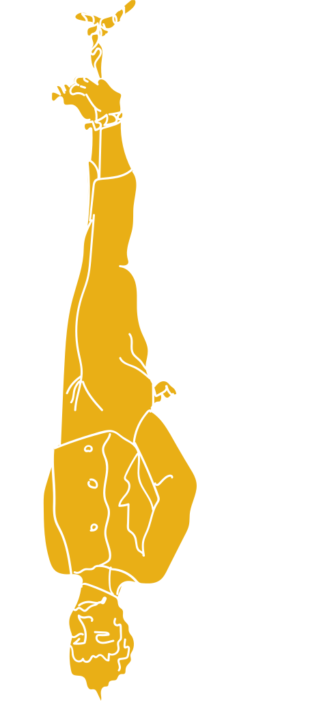
der gehängte.
Heute gilt die Karte als Symbol der Einweihung und der dazu notwendigen
Geduld und die Fähigkeit, die Welt aus einem anderen Blickwinkel zu betrachten.
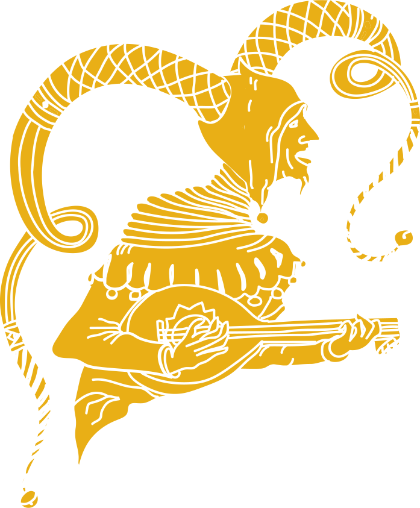
der Narr.
Der Narr symbolisiert die jugendliche Unwissenheit und Unbekümmertheit,
das sorglose Ins-Leben-Hineintreten.
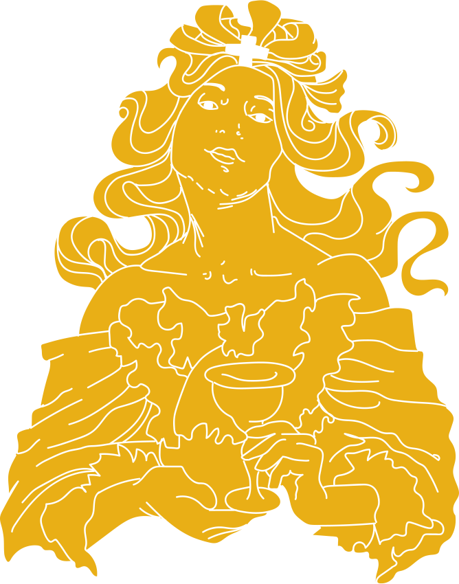
DIE Hohepriesterin.
Die Offenlegung eines schlicht-alltägliches Geheimnisses oder auch die
Verkörperung von Intuition und Weisheit.
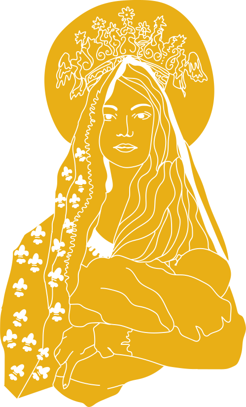
DIE HERSCHERIN.
Heute gilt die Karte als Symbol der Einweihung und der dazu notwendigen Geduld
und die Fähigkeit, die Welt aus einem anderen Blickwinkel zu betrachten.
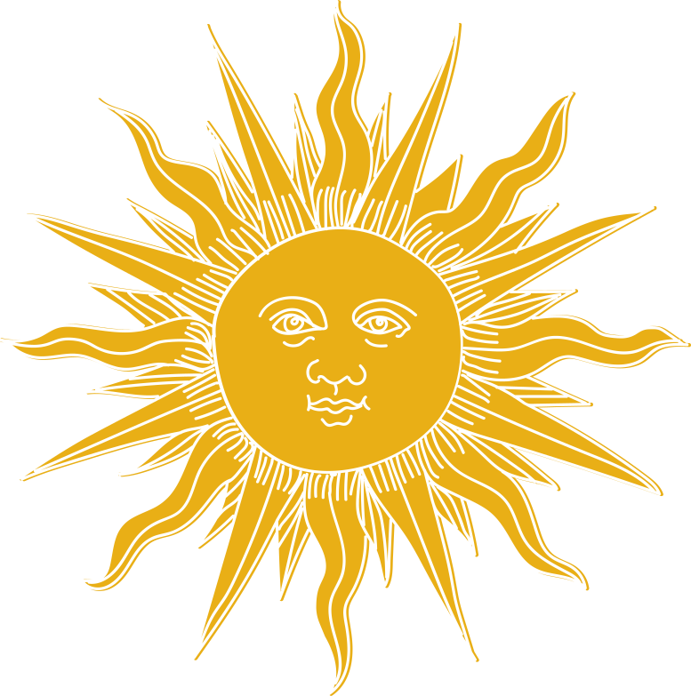
DIE SONNE.
Die Sonne symbolisiert die Hoffnung, den Idealismus, das Streben nach „höheren“ Werten. Sie steht aber auch
für geistige Klarheit, also nicht für Illusionen und Utopien.
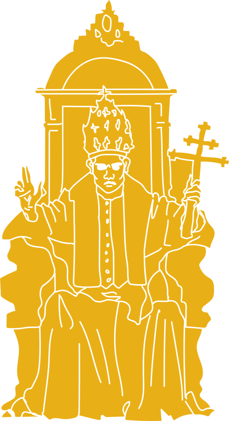
der Hierophant.
Der Hierophant repräsentiert den Willen Gottes und dessen Auslegung auf der Erde.
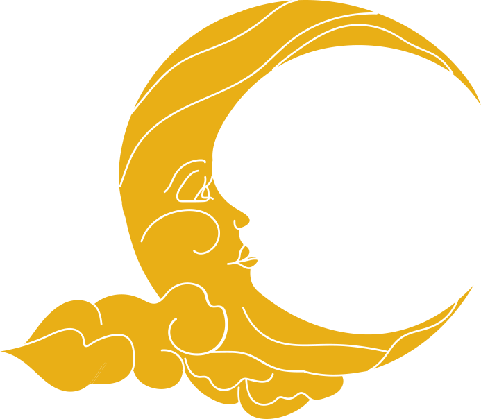
der MOND.
Heute gilt die Karte als Symbol der Einweihung und der dazu notwendigen Geduld
und die Fähigkeit, die Welt aus einem anderen Blickwinkel zu betrachten.
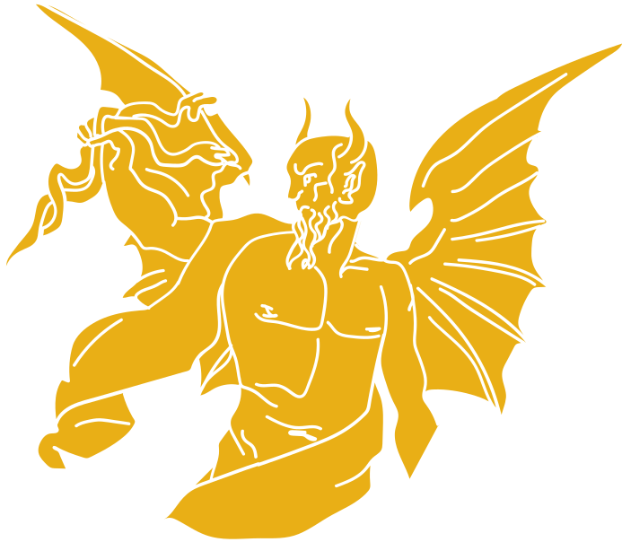
der TEUFEL.
Der Teufel symbolisiert das Totale und Widerspruchslose, seine Thematik ist die
Macht und die Ohnmacht. Auf dem Weg des Helden symbolisiert sie die Gewissensprüfung.
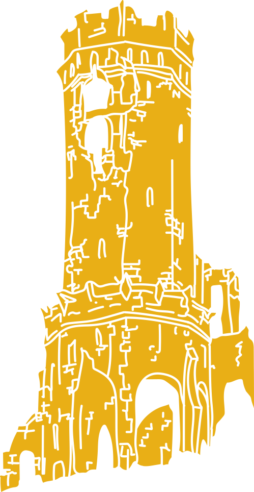
der TURM.
Der Turm symbolisiert das Gefängnis der Gedankenkonstrukte, Weltbilder usw.,
in das wir Menschen uns selber einspinnen.
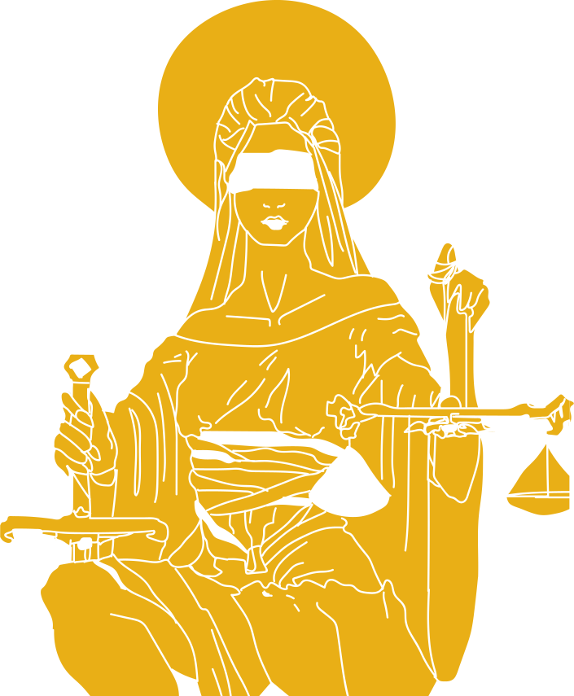
Die Gerechtigkeit.
Die Karte symbolisiert Fairness, Verantwortlichkeit, Regelung von öffentlichen
Angelegenheiten, Gerechtigkeit und Richterspruch
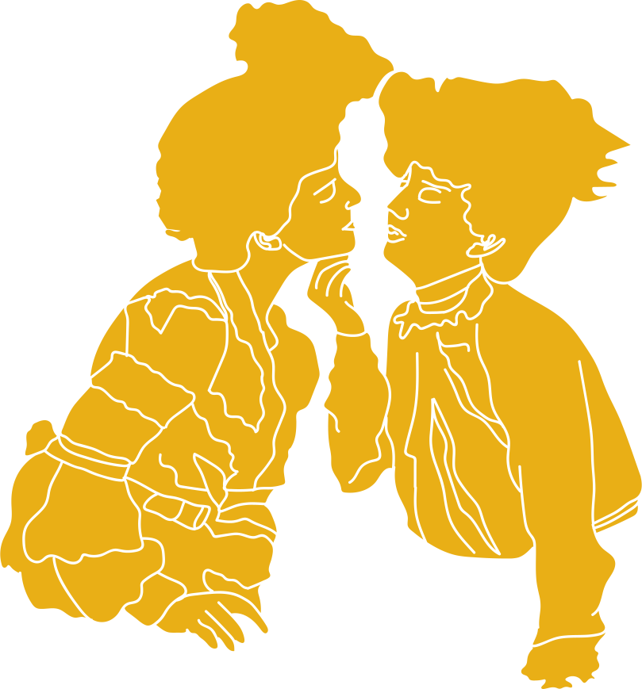
DIE Liebenden.
Die Karte repräsentiert Beziehungen und Optionen. Wird auch in einigen Decks
mit der Karte Die Zwillinge in Verbindung gebracht.